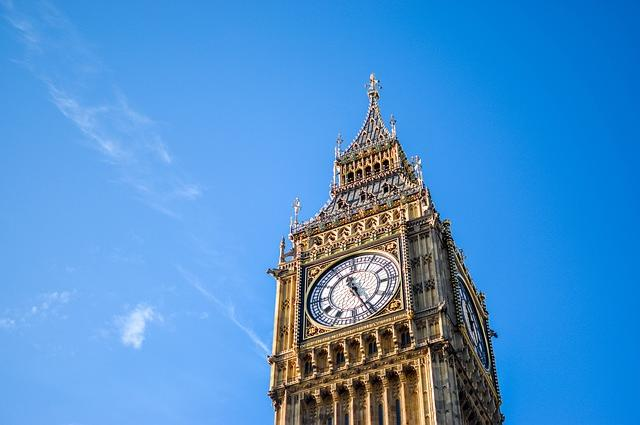

Londyn to stolica i największe miasto Anglii i Wielkiej Brytanii. Stojąc nad Tamizą w południowo-wschodniej Anglii, na początku 80-kilometrowego ujścia do Morza Północnego, od dwóch tysiącleci jest główną osadą.Londyn, jego starożytne centrum i centrum finansowe , została założona przez Rzymian jako Londinium i zachowuje granice zbliżone do swoich średniowiecznych.
Niewiele rzeczy jest bardziej związanych z Londynem niż ta ogromna 97-metrowa wieża, zwieńczona gigantycznym zegarem i dzwonem, który tak naprawdę nazywany jest Big Benem. Rozmiar Bena jest naprawdę imponujący i waży ponad 13 ton. Dźwięk tego dzwonu jest znany na całym świecie jako radiowe sygnały wywoławcze BBC. Wieża jest szczególnie piękna w nocy, w świetle wszystkich czterech tarcz, które oświetlają ją z każdej strony. Tuż obok Big Bena, ciągnącego się wzdłuż brzegów Tamizy, znajduje się budynek brytyjskiego parlamentu — Pałac Westminsterski.
